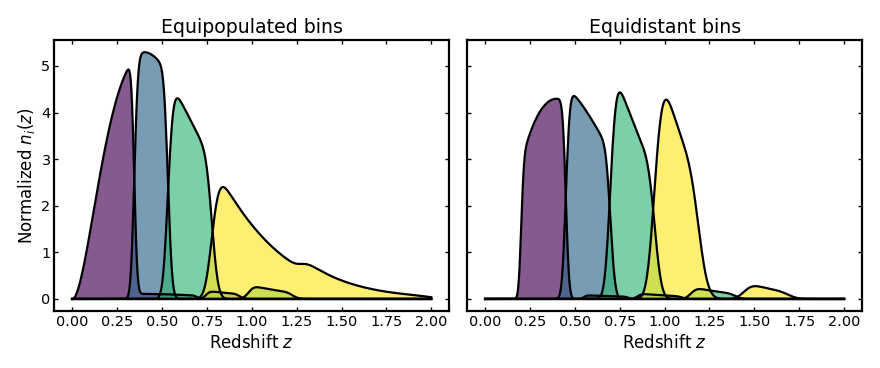
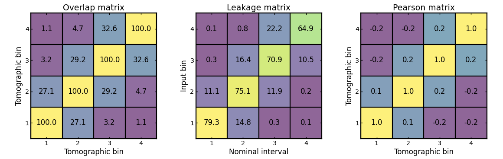
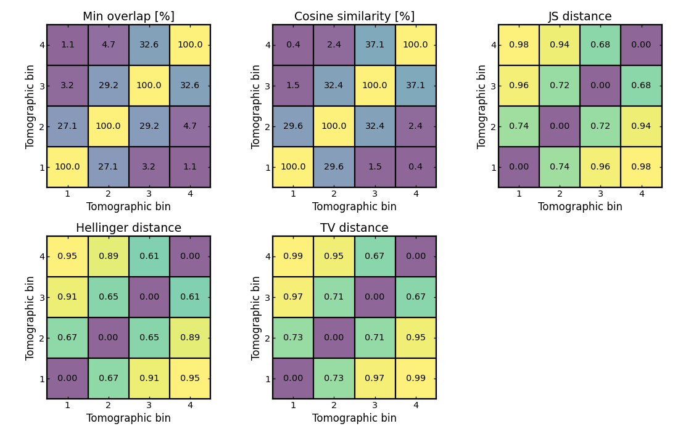
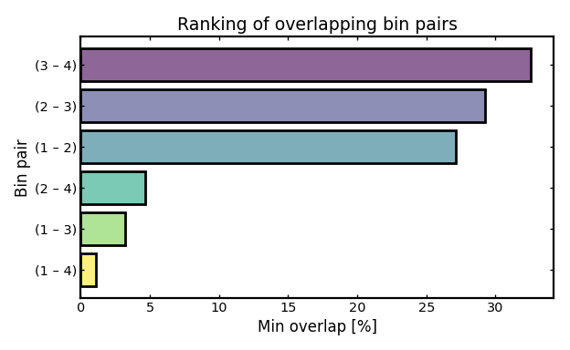
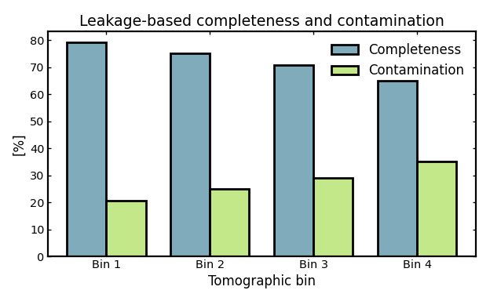
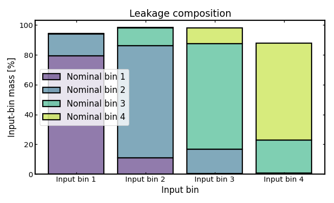
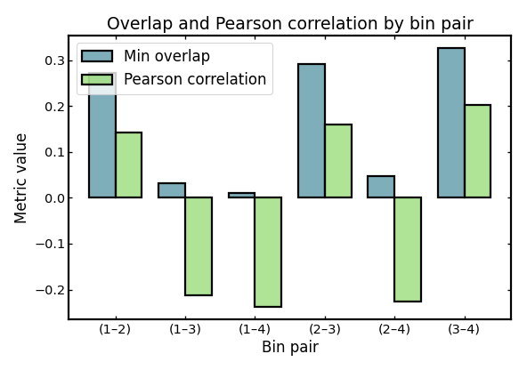
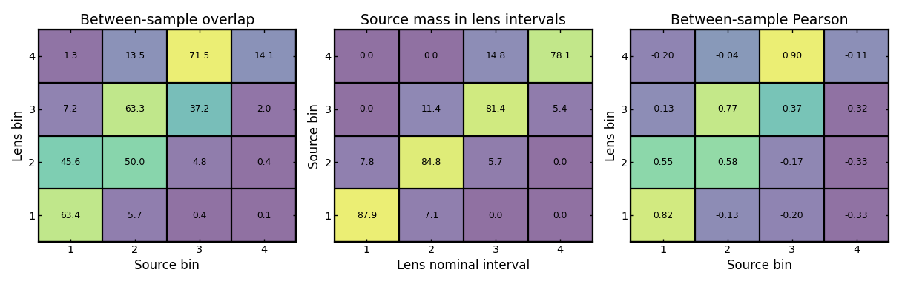
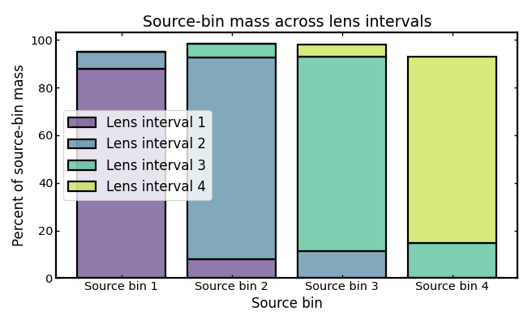
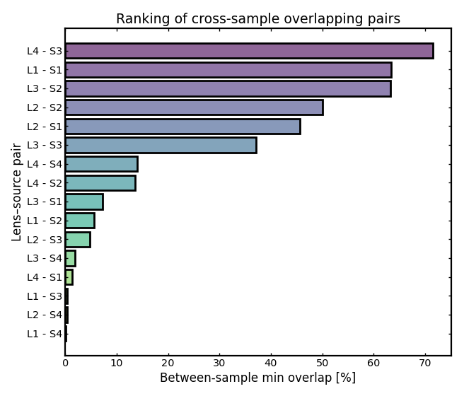

Bin diagnostics#
Bin diagnostics#
Once tomographic bins have been built, it is often useful to inspect their statistical properties before using them in a forecast or analysis.
Binny provides several diagnostics through binny.NZTomography
that quantify several complementary aspects of a tomographic binning
scheme: the shape of the bin curves, the distribution of galaxies
across bins, and the degree of coupling within or between bin
families through overlap, leakage, interval-based mass transfer, or
correlated structure. Together, these diagnostics help assess whether
the resulting bins are well separated, well populated, and suitable for
downstream forecasting or cosmological analysis.
This page illustrates these diagnostics for a simple four-bin photometric example and compares two common binning schemes:
equipopulated binning, where each bin contains a similar fraction of the galaxy sample,
equidistant binning, where the redshift interval is divided into bins of similar width.
The examples below focus on three parts of the diagnostic workflow:
visual inspection of the binned redshift curves,
within-sample diagnostics, such as overlap, leakage, pair rankings, and Pearson correlation between bins from the same sample,
between-sample diagnostics, such as overlap, interval-mass summaries, pair rankings, and Pearson correlation between bins from different samples.
Together, these quantities provide a practical way to inspect both the internal structure of a single tomographic sample and the relationship between two different tomographic samples, for example lens and source bins in galaxy-galaxy lensing.
All examples below are executable via .. plot::.
Building a representative photo-z example#
We begin with a smooth parent redshift distribution and construct two photometric tomographic realizations of the same sample: one using equipopulated bins and one using equidistant bins.
Both cases use the same photo-z uncertainty model, so differences in the resulting diagnostics can be attributed primarily to the binning scheme rather than to changes in the underlying uncertainty assumptions.
(Source code, png, hires.png, pdf)
{kind=link}
{kind=link}
{kind=link}

Within-sample diagnostics#
These diagnostics describe how bins from a single tomographic sample relate to one another. They are useful for assessing practical bin separation, internal mixing, and pairwise similarity within one tomographic realization.
Core cross-bin matrices#
Per-bin summaries describe each tomographic bin on its own, but they do not show how strongly different bins mix with one another. For that, it is useful to look at cross-bin diagnostics.
Binny provides three simple diagnostics for this purpose:
overlap, which measures how much two bin curves lie on top of one another in redshift,
leakage, which measures how much of one bin falls inside the nominal redshift range of another bin,
Pearson correlation, which measures how similar two bin curves are when sampled on the same redshift grid.
Although these quantities are related, they answer slightly different questions.
Overlap is the most direct measure of shared support. If two bins occupy much of the same redshift range, their overlap will be large. If they are well separated, their overlap will be small.
Leakage is more directional. It asks how much of the content of a given bin falls inside the intended redshift interval of another bin. This is useful because a bin can spill into its neighbor more strongly in one direction than the other, especially when the bin shapes are asymmetric or when outliers are present.
Pearson correlation focuses on shape similarity rather than on physical bin assignment. Two bins can have a similar overall profile and therefore a high Pearson correlation even if they are centered at different redshifts or have different total mass inside their nominal ranges. Pearson values lie between -1 and 1, where 1 indicates perfect positive correlation, 0 indicates no correlation, and -1 indicates perfect negative correlation.
The figure below shows these three diagnostics for a simple four-bin equidistant photo-z example.
In all three matrices, the diagonal corresponds to comparing a bin with itself, so those entries are usually the largest or among the largest. The more interesting part is the off-diagonal structure, because it shows how strongly different bins are coupled.
A simple way to read the matrices is:
small off-diagonal values usually mean the bins are well separated,
large off-diagonal overlap means two bins share a noticeable part of the same redshift range,
large off-diagonal leakage means galaxies assigned to one bin are spilling into the nominal interval of another,
large off-diagonal Pearson correlation means two bins have similar shapes, even if they do not represent exactly the same redshift slice.
None of these diagnostics by itself determines whether a binning scheme is “good” or “bad”. Instead, they help reveal different kinds of bin coupling. In practice, cleaner tomographic binning usually shows a strong diagonal and weaker off-diagonal structure, while broader smearing, stronger outliers, or less well-separated bins tend to produce more visible off-diagonal patterns.
(Source code, png, hires.png, pdf)
{kind=link}
{kind=link}
{kind=link}

In all three matrices, values near the diagonal typically indicate the strongest self-association, while off-diagonal structure reveals coupling between different bins. Large off-diagonal overlap or leakage usually signals reduced bin separation, whereas large off-diagonal Pearson correlation indicates that two bins have similar shapes even if their normalization or interpretation differs.
Comparing multiple similarity metrics#
Different cross-bin metrics highlight different aspects of similarity or separation between tomographic bins. For that reason, it is often useful to compare several metrics side by side rather than relying on only one.
Binny provides a range of pairwise diagnostics for this purpose. In the figure below, the same tomographic bin set is compared using five common measures:
min overlap, which measures the shared support between two normalized bin curves,
cosine similarity, which measures how closely aligned two sampled bin vectors are,
Jensen–Shannon distance, which measures how different two normalized distributions are,
Hellinger distance, which measures geometric dissimilarity between two probability distributions,
total variation distance, which measures the overall discrepancy between two normalized distributions.
These metrics do not all follow the same convention.
Min overlap and cosine similarity are similarity measures, so larger values mean that two bins are more alike.
By contrast, Jensen–Shannon distance, Hellinger distance, and total variation distance are distance measures, so smaller values mean that two bins are more alike.
This means the matrices should be read in two slightly different ways:
for similarity measures, larger off-diagonal values indicate more similar or less well-separated bins,
for distance measures, smaller off-diagonal values indicate more similar bins, while larger values indicate stronger separation.
Looking at several metrics together is useful because two bin pairs can appear similar under one definition and less similar under another. A pair may share substantial support in redshift, for example, while still differing in detailed shape, or it may have similar overall structure without strongly overlapping in the regions that matter most for another metric.
The diagonal entries again correspond to comparing each bin with itself. For similarity measures, those entries are typically among the largest. For distance measures, they are typically 0 or very close to 0.
The figure below therefore provides a broader view of bin coupling than any single metric alone. Strong agreement across several metrics usually indicates a robust pattern, whereas differences between metrics show that the apparent closeness of two bins depends on how similarity is being defined.
(Source code, png, hires.png, pdf)
{kind=link}
{kind=link}
{kind=link}

Pair-level summaries#
Matrix views are useful for seeing the full coupling pattern at once, but compact summaries can make the main trends easier to interpret. The following diagnostics reduce the pairwise information into rankings or per-bin summaries that are often easier to compare visually.
Ranking the most overlapping bin pairs#
A pair ranking provides a compact summary of which tomographic bin pairs are most strongly coupled according to a chosen pairwise metric.
Here the ranking is based on min overlap, so pairs with larger values share more support in redshift and are less cleanly separated. In many practical cases, the most strongly overlapping pairs are neighboring bins, since photo-z scatter tends to move galaxies preferentially into adjacent redshift intervals.
The bar chart below shows the largest pairwise min-overlap values for a four-bin photo-z example.
(Source code, png, hires.png, pdf)
{kind=link}
{kind=link}
{kind=link}

Completeness and contamination per bin#
The leakage matrix can be summarized into per-bin completeness and contamination measures.
For a given input bin, the diagonal leakage entry gives the fraction of its weight that remains inside its own nominal redshift interval. This is the completeness of that bin. Its complement measures the fraction that falls outside the intended interval and therefore quantifies contamination by leakage into other nominal bins.
Large completeness indicates that a bin remains well confined to its target redshift range, while large contamination indicates stronger mixing with neighboring bins.
(Source code, png, hires.png, pdf)
{kind=link}
{kind=link}
{kind=link}

Leakage composition by nominal bin#
A stacked leakage view shows how the weight of each input bin is distributed across the nominal redshift intervals.
Each bar corresponds to one input bin. The stacked segments show what fraction of that bin lies inside each target nominal interval. The diagonal component therefore represents self-consistency, while the off-diagonal components reveal where leaked weight ends up.
This visualization is especially useful for identifying whether leakage is mostly local, for example into adjacent bins, or whether there are longer-range tails and outlier-driven transfers across more distant bins.
(Source code, png, hires.png, pdf)
{kind=link}
{kind=link}
{kind=link}

Pearson correlation versus overlap#
Different pairwise metrics can highlight different aspects of similarity between tomographic bins.
Here, min overlap measures how much two bins directly share support in redshift, whereas Pearson correlation measures how similarly the two sampled bin curves vary across the redshift grid. Two bins can therefore exhibit modest direct overlap while still having a relatively strong shape correlation, or vice versa.
The figure below compares these two metrics for all unique off-diagonal bin pairs. Each pair of bars corresponds to one bin combination, showing its min-overlap value and its Pearson correlation side by side.
Because the two metrics capture different aspects of similarity, their values need not track each other exactly. Some bin pairs may share a substantial fraction of their redshift support, leading to relatively large overlap, while still differing in detailed shape. Other pairs may show similar overall profiles across the redshift grid, producing a larger Pearson correlation even when their direct overlap is smaller.
Comparing the two metrics in this way helps illustrate how different definitions of bin similarity emphasize different features of the tomographic bin curves.
(Source code, png, hires.png, pdf)
{kind=link}
{kind=link}
{kind=link}

Between-sample diagnostics#
These diagnostics compare bins from two different tomographic samples rather than within a single one. This is especially useful in joint analyses, where one often wants to assess how cleanly two samples are separated or how strongly particular cross-sample bin pairs are coupled.
In the examples below we adopt a simple convention: lens bins define the reference intervals and appear along the horizontal axis, while source bins appear along the vertical axis. For illustration, the lens sample uses equidistant binning and the source sample uses equipopulated binning.
Cross-sample matrices#
In joint analyses it is often useful to compare tomographic bins between two different samples rather than only within a single sample. A common example is comparing lens bins and source bins in a galaxy-galaxy lensing setup.
Binny provides binny.NZTomography.between_sample_stats() for this
purpose. These diagnostics can be used to quantify how strongly bins
from one sample overlap or correlate with bins from another sample, and
how much of one sample falls inside the nominal redshift intervals of
the other.
The example below constructs a simple lens-like and source-like photo-z setup on the same redshift grid, then compares them using between-sample overlap, interval-mass, and Pearson correlation.
(Source code, png, hires.png, pdf)
{kind=link}
{kind=link}
{kind=link}

These matrices are generally rectangular rather than square because the two samples need not have the same binning scheme, bin edges, or parent redshift distribution. The only requirement is that both tomographic realizations are evaluated on the same redshift grid. In practice, large values usually identify lens-source bin combinations that are less cleanly separated in redshift and may therefore deserve closer inspection in a joint analysis.
Cross-sample interval-mass composition#
While the interval-mass matrix gives the full rectangular pattern of how one sample maps onto the nominal intervals of another, a stacked composition view can make the main structure easier to read at a glance.
In the figure below, each bar corresponds to one source bin. The stacked segments show what fraction of that source-bin mass falls inside each lens nominal interval. The full height of a bar therefore represents the total source-bin mass accounted for across the chosen lens intervals, while the relative segment sizes show how that mass is distributed.
This view is useful for diagnosing whether a source bin is associated primarily with a single lens interval or whether its weight is spread more broadly across several intervals. A source bin whose bar is dominated by one segment is more cleanly aligned with a particular lens interval, whereas a bar with several substantial segments indicates broader cross-sample mixing.
In many practical cases, neighboring intervals receive the largest secondary contributions, reflecting partial redshift overlap between the two samples. More extended tails across distant intervals can instead indicate broader smearing or stronger outlier-driven transfer.
(Source code, png, hires.png, pdf)
{kind=link}
{kind=link}
{kind=link}

A bar dominated by one segment indicates that most of the corresponding source-bin mass falls inside a single lens interval, suggesting cleaner cross-sample alignment. By contrast, bars with several sizable segments show that the source bin is distributed more broadly across the lens intervals and is therefore less cleanly separated in redshift.
As in the matrix view, the most informative structure is usually in the off-dominant components. Small secondary segments suggest modest spillover into neighboring lens intervals, whereas larger secondary contributions indicate stronger cross-sample mixing.
Cross-sample pair rankings#
Between-sample pair rankings provide a compact way to identify which bin combinations across two tomographic samples are most strongly coupled according to a chosen metric.
This is often useful in joint analyses, for example when identifying which lens-source bin combinations are most strongly overlapping in redshift. Such rankings can help diagnose where sample separation is cleanest and where additional care may be needed in downstream analysis.
The example below ranks lens-source bin pairs by their between-sample min-overlap score.
(Source code, png, hires.png, pdf)
{kind=link}
{kind=link}
{kind=link}

Notes#
Within-sample diagnostics summarize how strongly bins from the same tomographic sample are coupled to one another. Large overlap, large off-diagonal leakage, or strong off-diagonal correlations generally indicate weaker practical separation between tomographic bins.
Between-sample diagnostics compare bins from two different tomographic samples, such as lens and source populations. They are useful for assessing redshift separation, cross-sample similarity, interval-based overlap, and possible foreground contamination in joint analyses.
Equipopulated and equidistant binning can lead to noticeably different population balances and coupling patterns, even when they are constructed from the same parent distribution and photo-z uncertainty model.
The diagnostics returned by
binny.NZTomographyare ordinary Python dictionaries, so the quantities shown here can be inspected, saved, or reused directly in downstream analysis workflows.